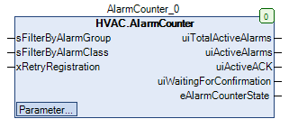

AlarmCounter (FB)¶
FUNCTION_BLOCK AlarmCounter
Short Description¶
Read active alarms from a given alarm group or alarm class.Typical application: Displays the number of active alarms.
Portrayal¶

Interfaces¶
Inputs¶
Name Datatype
Range
Init-Value
Functional Description
sFilterByAlarmGroup STRING Filter the number of active alarms only by the specified alarm group. (Empty = All groups)
sFilterByAlarmClass STRING Filter the number of active alarms only by the specified alarm class. (Empty = All classes)
xRetryRegistration BOOL Try registering the Alarm Manager client again
Outputs¶
Name Datatype
Range
Init-Value
Functional Description
uiTotalActiveAlarms UINT Number of all active alarms without filter criteria
uiActiveAlarms UINT Number of active alarms in “Alarm condition is true” state
uiActiveACK UINT Number of active alarms in “Wait for acknowledgement” state
uiWaitingForConfirmation UINT Current status
eAlarmCounterState eAlmAlarmCounterStates Number of active alarms in “Waiting for confirmation” state
Setpoints / Parameters¶
Name Datatype
Range
Init-Value
Functional Description
usiMaxFailedRegistrations USINT 5 Maximum number of failed client registration attempts for the alarm counter
Functional Description¶
General¶
Visualization¶
Codesys¶
- InOut:
Scope Name Type Initial Comment Input sFilterByAlarmGroup STRING Filter the number of active alarms only according to the specified alarm group. (Empty = All groups)
sFilterByAlarmClass STRING Filter number of active alarms only by specified alarm class. (Empty = All classes)
xRetryRegistration BOOL Try registering the Alarm Manager client again
usiMaxFailedRegistrations USINT 5 Maximum number of errors of the client registration for the alarm counter
Output uiTotalActiveAlarms UINT All active alarms without filter criteria
uiActiveAlarms UINT Number of active alarms in “Alarm condition is true” state
uiActiveACK UINT Number of active alarms in “Wait for acknowledgement” state
uiWaitingForConfirmation UINT Number of active alarms in “Waiting for confirmation” state
eAlarmCounterState eAlmAlarmCounterStates Current status